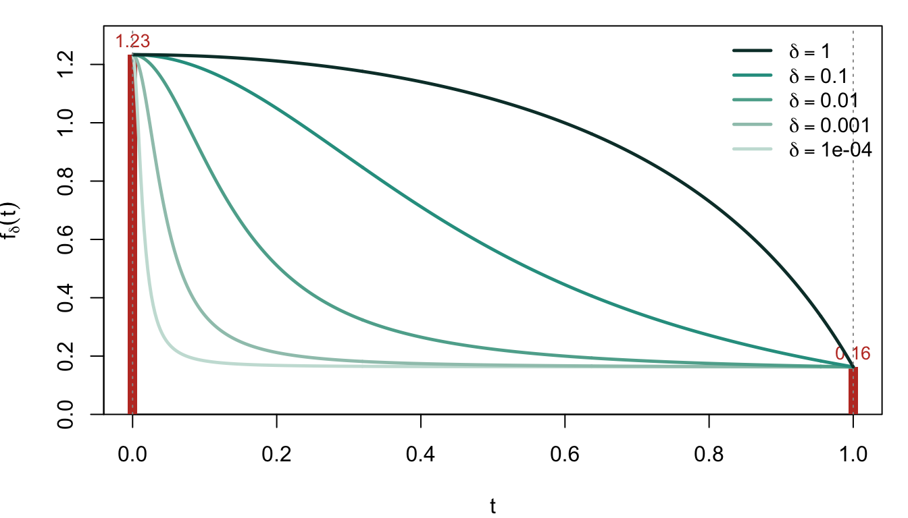
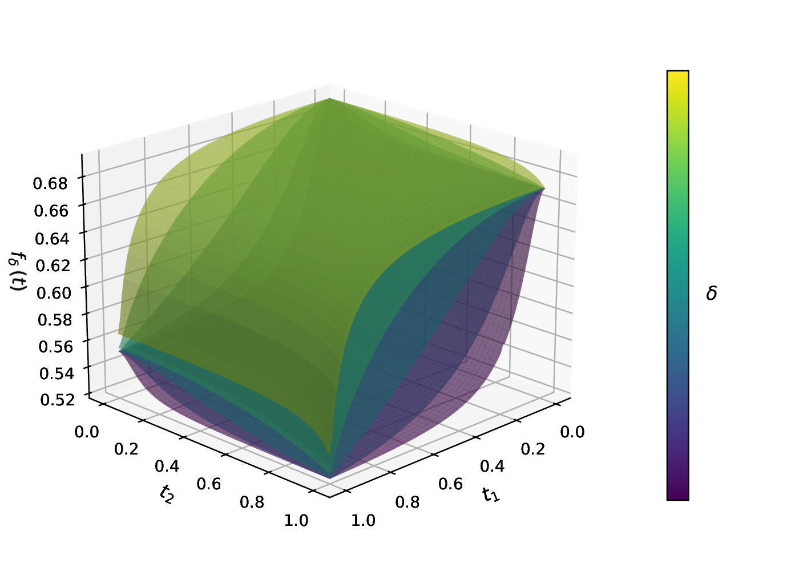

Boolean relaxation
From discrete subsets to the cardinality polytope
Recall: the discrete problem
From the Sparse GLM page, the problem we want to solve is
\[ \begin{aligned} &\min_{\beta_0 \in \mathbb{R},\; \boldsymbol{\beta} \in \mathbb{R}^p}\;\; -\tfrac{1}{n}\,\ell(\beta_0, \boldsymbol{\beta}) \\ &\text{subject to} \quad \|\boldsymbol{\beta}\|_0 \le k. \end{aligned} \]
The pain is the \(\ell_0\) constraint: it forces a search over \(\binom{p}{k}\) discrete supports. COMBSS replaces it by a continuous relaxation.
Reparameterising the support
Introduce an auxiliary vector \(\boldsymbol{t} \in [0, 1]^p\) — a continuous proxy for the binary indicator \(\boldsymbol{s} \in \{0, 1\}^p\). In the relaxed problem, the data sees the Hadamard product
\[ \boldsymbol{t} \odot \boldsymbol{\beta} \;=\; \bigl(\,t_1 \beta_1,\; t_2 \beta_2,\; \ldots,\; t_p \beta_p\,\bigr), \]
so that feature \(j\) is scaled by \(t_j\):
- \(t_j = 1\): feature \(j\) is fully in (coefficient \(\beta_j\) used as-is).
- \(t_j = 0\): feature \(j\) is out (effective coefficient is zero, regardless of \(\beta_j\)).
- \(0 < t_j < 1\): a continuous “partial inclusion”.
Vertices of the hypercube \([0,1]^p\) correspond exactly to discrete supports, and the cardinality constraint \(\sum s_j \le k\) becomes
\[ \boldsymbol{t} \;\in\; \mathcal{T}_k \;=\; \Bigl\{\, \boldsymbol{t} \in [0,1]^p \;:\; \textstyle\sum_{j=1}^{p} t_j \le k \,\Bigr\}, \]
a polytope whose vertices are exactly the binary \(k\)-supports.
The relaxed objective
For a curvature parameter \(\delta > 0\), define
\[ \boxed{\;\; f_{\delta}(\boldsymbol{t}) \;=\; \min_{\beta_0,\,\boldsymbol{\beta}}\; \Biggl[ -\tfrac{1}{n}\,\ell\bigl(\beta_0,\;\boldsymbol{t} \odot \boldsymbol{\beta}\bigr) \;+\; \delta \sum_{j=1}^{p} \bigl(1 - t_j^{2}\bigr)\,\beta_j^{2} \Biggr]. \;\;} \]
Two pieces:
- GLM loss evaluated at the effective coefficients \(\boldsymbol{t} \odot \boldsymbol{\beta}\).
- Curvature penalty \(\delta \sum_j (1 - t_j^2) \beta_j^2\): weights are large when \(t_j\) is small, pulling those \(\beta_j\) toward zero; weights vanish at the vertices (\(t_j \in \{0, 1\}\)).
The inner problem in \(\boldsymbol{\beta}\) (with \(\boldsymbol{t}\) fixed) is a ridge-penalised GLM — closed-form for Gaussian, one glmnet call for binomial/multinomial.
The outer problem in \(\boldsymbol{t}\) is smooth on the cardinality polytope \(\mathcal{T}_k\).
Properties of the relaxed objective
What does \(f_\delta(\boldsymbol{t})\) look like as we vary \(\delta\)? Two visualisations make the shape concrete — one in 1D and one in 2D.
One feature (\(p = 1\))
The simplest case: a single predictor with a Gaussian response. The relaxed objective is a function of one scalar \(t \in [0, 1]\).
Three things to read off:
- Endpoints are fixed: \(f_\delta(0)\) = the loss when no feature is in (null model); \(f_\delta(1)\) = the loss when the feature is fully in (OLS fit). Neither depends on \(\delta\).
- Small \(\delta\): The curve is nearly convex.
- Large \(\delta\): The curve becomes concave on the interior, with its minimum at the vertex \(t = 1\).
The homotopy in \(\delta\) — gradually increasing \(\delta\) during optimisation — uses the small-\(\delta\) smooth landscape for navigation and the large-\(\delta\) peaked landscape to push \(\boldsymbol{t}\) to a vertex (= a discrete subset). See Frank-Wolfe for the schedule.
Two features (\(p = 2\))
In 2D the same effect plays out as a surface deforming with \(\delta\). The figure below (from Mathur, Liquet, Muller, Moka 2026) shows \(f_\delta(\boldsymbol{t})\) over \([0, 1]^2\) for logistic regression at three values of \(\delta\):

The same story as the 1D case, now on a square. As \(\delta\) grows, the surface becomes spiky at the vertices, and the algorithm is forced toward a discrete support.
Two guarantees
Two results anchor \(f_\delta\) to the original discrete problem (Mathur, et al. 2026).
1. Corner equivalence at every \(\delta\). At any binary vertex \(\boldsymbol{s} \in \{0,1\}^p\),
\[ f_\delta(\boldsymbol{s}) \;=\; \min_{\substack{\beta_0,\,\boldsymbol{\beta} \\ \beta_j = 0\,\text{ if }\,s_j = 0}}\;\; -\tfrac{1}{n}\,\ell(\beta_0, \boldsymbol{\beta}) \qquad \text{for every } \delta > 0. \]
The penalty \(\delta(1 - s_j^2)\beta_j^2\) is zero when \(s_j = 1\), and pins \(\beta_j = 0\) when \(s_j = 0\). At the corners, \(f_\delta\) is the original sparse-GLM loss restricted to the support encoded by \(\boldsymbol{s}\) — no relaxation error.
2. Minimum at an optimal corner for large \(\delta\). There exists \(\delta^\star > 0\) such that for every \(\delta \ge \delta^\star\), \(f_\delta\) is concave on \(\mathcal{T}_k\). Since a concave function on a polytope attains its minimum at a vertex,
\[ \arg\min_{\boldsymbol{t} \in \mathcal{T}_k} f_\delta(\boldsymbol{t}) \;\in\; \{0,1\}^p, \]
and by corner equivalence that vertex solves the original \(\ell_0\)-constrained sparse-GLM problem exactly.
Together they motivate the homotopy in \(\delta\): start small for a smooth landscape, end large to land on a discrete solution. The outer optimisation along the way needs the gradient \(\nabla f_\delta\) — derived next on the Frank-Wolfe page.